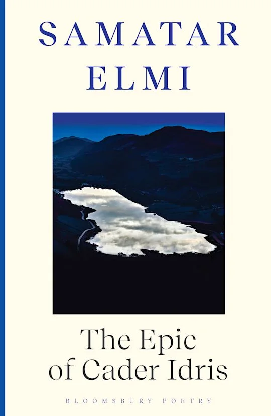

The Epic of Cader Idris
Elmi’s debut full-length collection brings hip-hop’s music into conversation with British myth, Somali oral history, philosophy and the lived experience of diaspora. The collection includes the poem that won the 2021 Geoffrey Dearmer Prize.